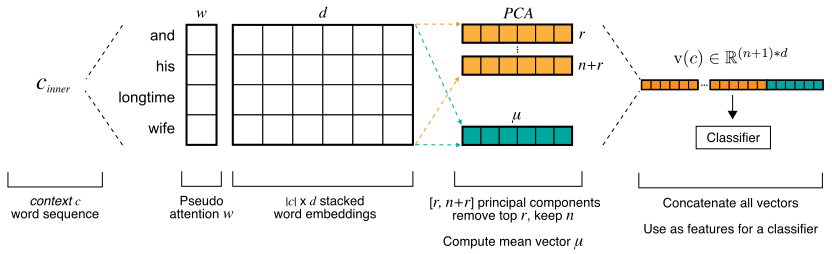

A Fast Baseline for Sentence Representation Learning (Spoiler Alert: It’s PCA and Logistic Regression)
Jason Fries, Sen Wu, Kristy Choi, Annie Marsden, Christopher Ré
Snorkel Blog
TL;DR: We describe a computationally fast representation learning model that approaches -- and sometimes surpasses -- the performance of a Bidirectional-LSTM on 6/6 relation extraction benchmarks. We use familiar methods like principal component analysis (PCA) and pre-trained word embeddings to automatically create features for a logistic regression model. This approach is both easier to tune and up to 270x faster on CPU than BiLSTMs with attention. We show that these classical approaches can still outperform deep learning in some cases, and this blog post is our first attempt to tease out these cases.
Deep learning is a powerful tool for building systems that require natural language understanding. Measured by recent arXiv.org papers, Bidirectional-LSTMs (BiLSTMs) 1 are the go-to method for state-of-the-art performance on text classification tasks. Stanford’s Christopher Manning calls this the BiLSTM Hegemony: for many NLP tasks, a vanilla BiLSTM with attention is the de facto baseline for evaluating classification performance.
The advantages of deep learning are clear and exciting. One can write a BiLSTM in 10-20 lines of Python using deep learning frameworks like PyTorch. There are great tutorials on how to get set up, and when the models work the results can seem magical. One of the key advantages of BiLSTMs and other similar deep models is that they remove manual feature engineering, which is a time-consuming, tedious, and difficult part of model building. However, deep learning has many hidden trade-offs and BiLSTMs are not the only method to obviate feature engineering: well-established classical methods like principal component analysis (PCA) can also automatically obtain features from data.
| PROS |
|
| CONS |
|
In HazyResearch, we regularly interact with academic and industry collaborators using Snorkel (Ratner et al. 2018), our system for rapidly creating, modeling, and managing training data. Many of these users rely on BiLSTMs to avoid feature engineering and get the best extraction performance possible, but this comes with considerable computational requirements. This a significant logistical roadblock in settings where data cannot leave secure compute environments, as is common with patient medical data, cutting off access to state-of-the-art GPU hardware. In one collaboration, researchers analyzing large-scale patient clinical notes were using BiLSTM models that took days to tune and train on the CPU, making it slow to iterate and refine Snorkel applications.
After interactions like these, we wondered how well a simple method built on PCA would perform compared to BiLSTMs. Our hypothesis was that we could pay some price in overall performance, but bring end-users the advantages of automatic feature engineering, speed, tunability, and more. Surprisingly, after experiments with collaborator's information extraction problems, we found that a PCA-based approach actually matched or outperformed BiLSTMs in several cases. This blog post is our first step in exploring the performance and computation trade-offs between this simple, fast PCA-based method and several standard BiLSTM models.
We study relation extraction (RE), considered one of the more difficult tasks in NLP (Chaganty et al. 2017), for our benchmarks. In RE, the goal is to predict a semantic connection between two or more entities expressed in text. Our experiments assume binary relations in which all entities are pre-tagged and expressed within a single sentence. With a BiLSTM, the goal is to learn a representation of both the sentence and the relation entities. For example, if we were identifying married couples in newswire text, i.e., a Spouse relation, we would learn a representation of the sentence below.
Figure 1: An example Spouse relation with Person arguments (Stephen Colbert, Evelyn)
What should a sentence representation encode for relation extraction? Positional information is important for RE (Zhang et al. 2017). As humans, we can easily identify sentence regions or contexts that contain important information for classification:
A classifier needs to learn where in the sentence to find these types of clues. In manual feature engineering, we’d encode these insights directly as features using word n-grams, POS tags, dependency parse trees, etc. BiLSTMs can learn most of this structure automatically from labeled data. This is an elegant, but more difficult learning objective.
Instead of labor-intensive manual feature engineering, we model the relation extraction task as a set of simple sentence partitions based on information we know a priori. Figure 2 shows how given pre-tagged entities, a sentence can be partitioned into a set of 4 contexts \( \{ c_{mention1}, c_{mention2}, c_{inner}, c_{sentence} \} \).
Figure 2: Sentence contexts or parts of the sentence where humans expect to find informative features.
To form a representation for these contexts, we use pre-trained word embeddings as our base building blocks. Word embeddings are low-dimensional vectors that capture semantic and syntactic properties of words, commonly generated using word2vec (Mikolov et al. 2013), GloVe (Pennington et al. 2014), or singular value decomposition (SVD) / PCA (Levy and Goldberg 2014). Embeddings are used virtually everywhere in modern NLP systems.
Many researchers have generated compositional representations for phrases and sentences by taking the weighted or unweighted mean of a matrix of stacked word embeddings, i.e., “neural bag-of-words models” (Kalchbrenner et al., 2014, Iyver et al. 2015, Yu and Dredze 2015). Another common technique is applying dimensionality reduction to the full dictionary of embeddings using SVD/PCA to keep or remove \( n \) dominating directions (Arora et al. 2017, Mu et al 2017), which improves embedding performance on downstream, extrinsic classification tasks.
Given these insights on composing sequences of word embeddings, there are three key aspects we want a PCA-based model to capture:
All three of these requirements can be implemented using classical techniques. First, we define a function \( v(c) \) that takes as input a sequence of words, forming a context \( c \) as outlined above. This sequence is transformed into a stacked \( |c| \times d \) matrix of word embeddings. For each individual context matrix, we compute the unweighted mean, then separately apply PCA. We then concatenate the mean vector with the top \( n \) principal components, where \( n \) is chosen via hyperparameter tuning (0 - 2 in our setting), and create a final vector representation.
Optionally, we can define a set of weights, compute a weighted mean of context embeddings, and then apply PCA. Here we use a simple, exponentially weighted decay kernel centered around the relation's entities. This allows us to encode the intuition that nearby words are more informative and approximate some of the benefits provided by learned attention weights. The full pipeline for this process is in Figure 3.
Figure 3: Creating a vector representation of a context, i.e., a subsequence of words from a sentence.
A feature representation for each relation instance \(x_i \in X\) is just the concatenation of all context representations for that relation’s parent sentence
$$x^{s}_{i} = v(c_{mention1}) \frown v(c_{mention2}) \frown v(c_{inner}) \frown v(c_{sentence})$$To model bidirectionality, we generate \(\overleftarrow{x^{s}_{i}}\) for the same sentence representation, but with all words in reverse order. This is concatenated with \(x^{s}_i\) to create the final feature representation. For classification, we use a standard logistic regression model.
This defines a very simple BiLSTM analogue, implemented using textbook statistical learning methods. Nothing is individually groundbreaking here; all the techniques discussed above can be found in any introductory tutorial on using PCA with logistic regression. However, combined together, these techniques define a surprisingly powerful model that provides many of the same benefits as a BiLSTM, along with considerable advantages in speed and tunability.
Since we apply PCA separately to each context embedding matrix, this introduces a problem aligning the learned representations. Think of the feature representation generated by PCA as the best (in Frobenius norm) low rank approximation to the concatenated context representation. In the rank 1 case, \( x \) and \( -x \) are both equally good eigenvectors, but for classification we need to choose consistently when encountering the same matrix. For ranks \( >1 \), vectors are only invariant up to rotations, meaning there are infinitely many, equally good representations.
To ensure we consistently make the same choice for classification, we use a method based on the Orthogonal Procrustes problem, where we learn a transformation to align our representations. This approach gives a deterministic algorithm to consistently pick a class representative from the set of all possible feature vector outputs for a given sentence. In our experiments discussed below, PCA features were fairly consistent even without applying the Procrustes correction, but alignment did have a small impact on scores on the order of +/- 1.0 F1 point on average.
We report comparison scores for the two best models found in our experiments 2 : BiLSTMs + attention vs. PCA with exponential weighting. We then compare this BiLSTM model with a PCA model incorporating the Procrustes correction. We evaluate performance on 3 RE datasets, using traditionally supervised and weakly supervised labels, and comparing the PCA model performance to a standard implementation of a BiLSTM with attention model, as described in (Zhou et al. 2016). For this blog, we only evaluate unidirectional PCA models. The same word embedding sets were used to initialize PCA and pre-train the BiLSTMs.
All RE benchmark datasets are described in the table below. Each dataset was split into training, validation, and test sets. We used two forms of supervision: traditional supervised learning with hand-labeled training data; and data programming (Ratner et al. 2016) a method for generating large-scale training data using heuristics, knowledge bases, crowdsourcing and other forms of weak supervision. This results in 6 total benchmark experiments.
|
Dataset |
Task Description |
Domain |
Access |
|
ACE |
Generic Relation Extraction |
Newswire |
DUA |
|
Spouse |
Extract married couples |
Newswire |
Public |
|
CDR 3 |
Biocreative Chemical Disease Relation Task |
Scientific Publications |
Public |
All models were tuned over a search space of 50 models per benchmark dataset using random grid search. Hyperparameter choices were made according to best practices in deep learning for NLP and empirical guidelines for tuning LSTMs (Greff et al 2016). BiLSTMs were trained for 200 epochs, stopping early after more than 50 epochs without improvement on the validation set. Hyperparameter ranges for the BiLSTM models are below. Where appropriate, we add references justifying parameter choices. PCA configurations are available on our github page
|
Hyperparameter |
Discrete Sample Values |
|
Learning rate |
[10−4, 10−3, 10−2] (Greff et al 2016) |
|
Batch Size |
[64, 128, 256] (Huang et al 2015, Melis et al 2017, Jaderberg et al. 2017) |
|
Output Layer Size |
[100, 200, 400] (Ruder et al 2016, Tay et al. 2017) |
|
Dropout |
[0.25, 0.5] (Wells et al. 2014, Zhou et al. 2016) |
|
Rebalance Classes |
[True, False] |
To measure model variance and compute statistical significance between PCA and BiLSTM scores, we took the top 5 scoring hyperparameter configurations found during model search and ran 10 small-scale searches using different random seeds. All PCA and BiLSTM models used the same seeds. The distribution of the 10 best scores per dataset was compared across models using Welch’s t-test and reported at significant threshold p < 0.05.
To compute speedup measures, we timed 10 trials of the PCA and BiLSTMs models run on all datasets and computed a mean training time per instance. All jobs were run serially on the same machine. Time was normalized by number of epochs, training instances, and batch size. Timed BiLSTMs used 100 dimensional output embeddings. We report the speedup based on this mean time estimate. This is a conservative baseline, as larger output dimensions take longer to train.
Bringing everything together, how does PCA perform? Surprisingly well. In 3/6 datasets, PCA outperformed the BiLSTM+attention by 0.2 - 4.7% (0.2 - 2.8 F1 points). In the 3 other datasets, BiLSTMs outperformed PCA by 1.3 - 3.7% (0.6 - 2.2 F1 points), though these differences were not statistically significant at p < 0.05. BiLSTMs exhibited higher variance in overall scores that PCA. Full metrics are provided in Table 1.
|
Dataset |
BiLSTM + Attention |
PCA + Exp. Decay |
+/- |
||
|
ACE-dp |
53.6 (1.3) |
[51.0, 55.2] |
52.9 (0.4) |
[52.5, 53.6] |
-0.6 |
|
ACE-supervised |
60.7 (2.0) |
[56.1, 62.7] |
59.6 (0.9) |
[57.6, 61.3] |
-1.1 |
|
CDR-dp |
56.8 (0.9) |
[55.5, 58.2] |
56.9 (0.6) |
[55.8, 57.7] |
+0.2 |
|
CDR-supervised |
59.2 (1.3) |
[56.6, 61.3] |
62.0 (0.3) |
[61.5, 62.6] |
+2.8 |
|
Spouse-dp |
55.7 (1.1) |
[53.7, 57.0] |
57.9 (0.8) |
[56.6, 58.9] |
+2.2 |
|
Spouse-supervised |
59.3 (2.3) |
[56.5, 63.3] |
57.1 (2.1) |
[51.7, 59.8] |
-2.2 |
Aligning embedding spaces after applying PCA also has a modest impact on the overall performance, as shown in Table 2. The maximum absolute change in F1 score ranged from -2.9 to +2.0 F1 points, compared to the model without the correction. The effect size varied across dataset; for 2 cases there was no change; in 2 cases the average score improved by 0.6 to 1.1 F1 points; and in final 2 scores went down 0.6 to 0.9 points.
|
Dataset |
Embeddings |
BiLSTM + Attention |
PCA + Exp. Decay + |
||||
|
P |
R |
F1 |
P (SD) |
R (SD) |
F1 (SD) |
||
|
ACE-dp |
Wikipedia |
49.5 |
60.7 |
54.5 |
47.2 (1.2) |
63.6 (2.7) |
54.1 (1.1) |
|
ACE-supervised |
Wikipedia |
76.9 |
46.0 |
57.5 |
69.0 (0.0) |
55.7 (0.0) |
61.7 (0.0) |
|
CDR-dp |
PubMed |
44.6 |
80.2 |
57.3 |
44.3 (1.0) |
83.4 (0.0) |
57.9 (0.8) |
|
CDR-supervised |
PubMed |
57.0 |
62.1 |
59.5 |
53.4 (0.0) |
73.0 (3.5) |
61.7 (1.3) |
|
Spouse-dp |
Wikipedia |
48.1 |
62.1 |
54.2 |
67.1 (0.0) |
50.0 (0.0) |
57.3 (0.0) |
|
Spouse-supervised |
Wikipedia |
61.7 |
61.1 |
61.4 |
67.9 (5.1) |
46.4 (1.8) |
55.1 (1.4) |
On the CPU, PCA was dramatically faster to train than the BiLSTM models. In speed tests, controlling for differences in training configurations, PCA with attention is 199x faster than a vanilla BiLSTM and 271x faster than a BiLSTM with attention. Adding attention to PCA via exponential weighting comes with essentially zero computation cost while adding attention to a BiLSTM increases runtimes by 36%.
What have our experiments shown? By comparing a simple PCA-based method against a standard BiLSTM with attention, we have demonstrated that PCA features can be quite competitive against a state-of-the-art relation extraction model, even surpassing BiLSTM scores in 3/6 datasets. Why is PCA so effective in a relation extraction setting? Our hypothesis is that PCA does a very good job of preserving word sequence and phrase semantics in a lower dimension subspace. When our task fundamentally requires mapping the semantic meaning of phrases, as is the case in relation extraction, selecting the top principal components proves a powerful feature extraction strategy.
PCA doesn’t win in every setting, of course, but it comes with many considerable advantages, like speed and theoretical interpretability. While we could likely continue to engineer more complicated variations on BiLSTMs to obtain the absolute best performance possible, it’s wise to be aware of the trade-offs in engineering time and computational costs when building systems in the real world. When a classic technique like PCA performs so well — with little engineering effort and up to 270x speedup — then to paraphrase Yaniv Erlich, "there is no need to build a spacecraft to travel to the supermarket."
Where else can PCA-based approaches work? A natural next step is to explore how it performs in a range of NLP tasks, ranging from simple named entity recognition to more difficult problems like open domain question answering (QA). While PCA appears to do well for general semantic tasks that require mapping meaning and operate at the level of a sentence or phrase, it’s unclear how well it will do when we are not directly mapping meaning. In QA, for example, we typically need to transform a question phrase into something that allows us to map to an answer. This is semantically related, but not necessarily a direct mapping, which introduces interesting twists in the PCA setting.
We strived to make our experimental pipeline as transparent and reproducible as possible.
This blog post isn’t a static artifact, and we look forward to other reproducing our work and calling out any mistakes.
[1]
For a great introduction on LSTM / RNNs see
here (also the source of our LSTM image)
and here.
[2] We ran more experiments than are reported here, including a comparison of a standard BiLSTMs against PCA without any exponential weighting. The story is essentially the same as the tables reported here.
[3] CDR scores are not directly comparable to published benchmarks as we do not employ any of the rule-based, post-processing techniques used by the top-performing systems. Some of these rules, such as filtering based on the assumption that every document contains at least 1 relation, are not applicable in real-world extraction systems.
For attribution in academic contexts, please cite this work as
Fries, J., Wu, S., Choi, K., Marsden, A., R{\'e}, C., "A Fast Baseline for Sentence Representation Learning (Spoiler Alert: It’s PCA and Logistic Regression)", HazyResearch, 2017. https://hazyresearch.github.io/snorkel/blog/pca_lstm
BibTeX citation
@article{fries2017pcalstm,
author={Fries, Jason and Wu, Sen and Choi, Kristy and Marsden, Annie and R{\'e}, Christopher},
title = {A Fast Baseline for Sentence Representation Learning (Spoiler Alert: It’s PCA and Logistic Regression)},
journal = {HazyResearch},
year = {2017},
url = {https://hazyresearch.github.io/snorkel/blog/pca_lstm}
}